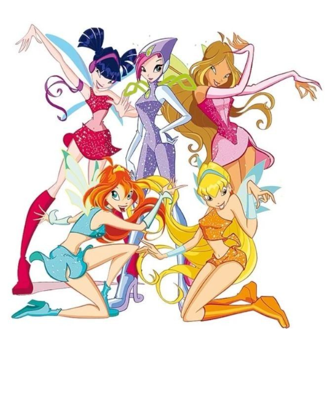

As fadas do universo das winx
Das telas para o mundo mágico, o Clube das Winx construiu uma história cheia de amizade e momentos marcantes.

Arquivo histórico • Winx
Três fatos sobre as Winx
01
A estreia aconteceu em 2004
A série foi criada por Iginio Straffi e lançada originalmente na Itália antes de virar um sucesso mundial.
02
A escola das fadas chama-se Alfea
É o colégio no mundo de Magix onde Bloom, Stella, Flora, Musa, Tecna e Aisha aprendem a dominar os seus poderes.
03
As transformações mudam a cada desafio
Para enfrentar vilões mais fortes como as Trix, as fadas precisam conquistar novas transformações como Enchantix e Believix.